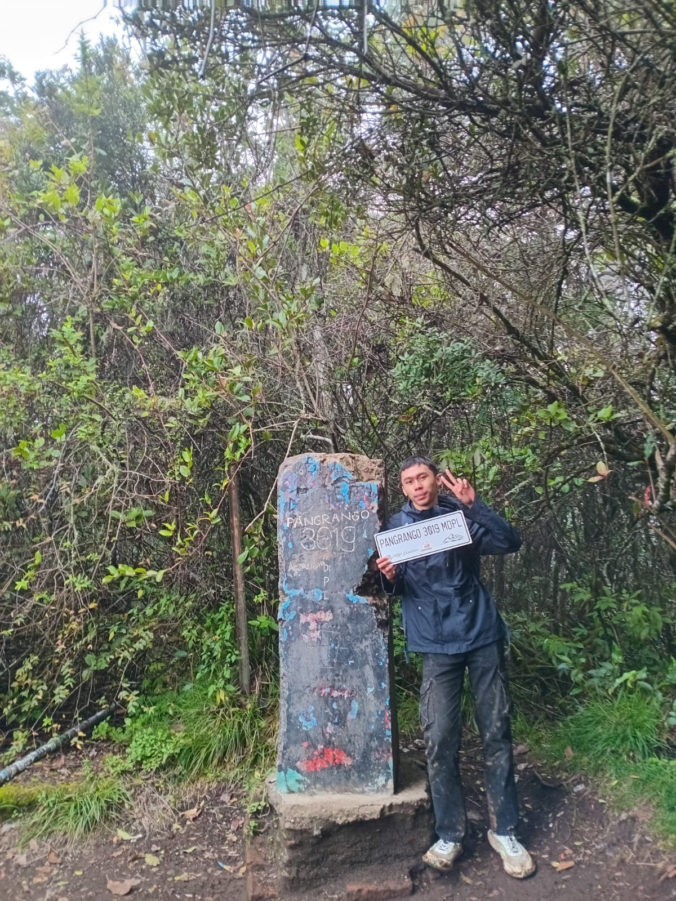

Tugas Praktikum Web

Keterangan Pendakian
| Data | Keterangan |
|---|---|
| Nama Pendaki | Muhammad Ihsanul Fikri |
| Lokasi | Tugu Puncak Gunung Pangrango |
| Ketinggian | 3019 MDPL |
Perlengkapan yang Digunakan
- Jaket Waterproof
- Sepatu Gunung
- Celana Cargo
Urutan Langkah Pendakian
- Mendaftar SIMAKSI
- Memulai Pendakian dari Basecamp
- Melewati Pos-pos Pendakian
- Tiba di Kandang Badak
- Muncak ke Puncak Pangrango